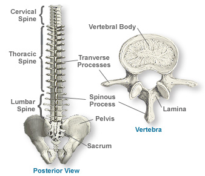

-
Click and Choose
-
Learn by choices
1. BRAIN A. Hindbrain i. Medulla Oblongata - Regulates essential physiological processes such as blood pressure, heartbeat and breathing ii. Pons – Connects the forebrain and medulla oblongata. iii. Cerebellum – Controls posture and balance, coordinates unconscious muscular movements. B. Midbrain – Relays information about voluntary movements from forebrain to spinal cord. C. Forebrain i. Thalamus – Processes information and relays it to the cerebrum. ii. Hypothalamus – Homeostatic control of most organs iii. Cerebrum • White Matter – Transmits information within the brain. • Gray Matter(Cerebral Cortex) – Sensory, moto and association areas.
2. SPINE A. Cervical spine makes up the neck and has 7 vertebrae. The top two bones are known as the atlas and axis and are different from the others to allow rotation of the skull as well as forwards and backwards. B. Thoracic spine has 12 vertebrae which the ribs attach to. They are larger than the cervical vertebrae as they have to support more of the bodies weight. C. Lumbar spine has 5 vertebrae which make up the lower back. D. Sacrum consists of 5 bones which are fused or stuck together and the coccyx is made up of 4 tiny bones and used to be a tail.

VERTEBRAE DISC 1. VERTEBRAL BODY - The body of the vertebra is the primary area of weight bearing and provides a resting place for the fibrous discs which separate each of the vertebrae. 2. LAMINA - covers the spinal canal, which is the large hole in the center of the vertebra through which the spinal nerves pass. 3. SPINOUS PROCESS - the bone you can feel when running your hands down your back 4. TRANSVERSE POCESSES - oriented 90 degrees to the spinous process and provide attachment for back muscles. Definitions and Parts obtained from: • https://i.pinimg.com/736x/4c/d3/72/4cd37225feefd8b710f9401662cb3ac0--human-brain-diagram-the-human-brain.jpg • Hoefnagels, M. (2016). The Skeletal and Muscular System. Hoefnagels, M. (Ed.), General Biology (p. 523). New York, NY: McGraw-Hill Education • http://www.teachpe.com/anatomy/the_spine.php • https://www.scoi.com/specialties/spine-doctor/anatomy-spine • https://28oa9i1t08037ue3m1l0i861-wpengine.netdna-ssl.com/wp-content/uploads/2018/04/Brain-cross-section.png
Adrenal Glands - Produce hormones that regulate blood pressure. Kidneys - Maintain homeostasis in blood composition. Renal Artery - Delivers blood to kidney. Renal Vein - Drains blood from kidney. Ureters - Convey urine to bladder. Urinary Bladder - Store urine before elimination. Urethra - Conveys urine out of the body.
References: Hoefnagels, M. (2016). The Skeletal and Muscular System. Hoefnagels, M. (Ed.), General Biology (p. 523). New York, NY: McGraw-Hill Education Kidney: https://diatribe.org/sites/default/files/images/57630492_thumbnail.jpg Urinary System: http://humananatomychart.us/wp-content/uploads/2015/11/diagram-on-the-urinary-system-urinarydiagram1.jpg

• ANTERIOR 1. Deltoid – The deltoid has three origins: the lateral end of the clavicle, the acromion of the scapula at the top of the shoulder, and the spine of the scapula. They help abduct the arm, or move it away from the middle of the body. 2. Pectoralis Major – Large, fan-shaped muscles that cover the upper part of the chest. They flex the shoulders and pull the arms into the body. 3. Biceps Bracii – rests on top of the humerus bone. It rotates the forearm and also flexes the elbow. 4. External Oblique – These muscles make up the side walls of the abdomen. They help compress the abdomen and rotate the trunk and allow it to bend sideways. 5. Rectus Abdominis – They are the strap-like muscles of the abdomen, extending from the ribs to the pelvis. Better known as the stomach muscles, they flex the vertebral column or backbone and provide support for the abdomen and its many organs. 6. Sartorius –It is long, strap-like muscle that crosses the front of the thigh diagonally from the outside of the hip to the inside of the knee. Although it is not that powerful, it does lie on upper surface of the thigh and is easily seen. 7. Quadriceps – A group of four muscles that help powerfully extend or straighten the knee. • POSTERIOR 1. Trapezius – kite-shaped muscles that run from the back of the neck and upper back down to the middle of the back. They raise, lower, and adduct the shoulders. 2. Triceps Brachii – This muscle is located in the back of the upper arm and helps straighten the arm. It does the opposite of the biceps. 3. Gluteus Maximus – Large muscles that form the flesh of the buttocks. They help extend the hips in activities such as climbing the stairs. 4. Gastrocnemius – This diamond-shaped muscle, formed in two sections, helps extend or lower the foot, such as when an individual walks on his or her toes. 5. Achilles Tendon – A strong tendon that attaches the gastrocnemius to the heel of the foot. Definitions and Parts obtained from: 1. Hoefnagels, M. (2016). The Skeletal and Muscular System. Hoefnagels, M. (Ed.), General Biology (p. 523). New York, NY: McGraw-Hill Education 2. https://www.healthline.com/human-body-maps/muscular-system 3. Photo Source: https://www.thinglink.com/scene/837710811861352448
The trachea – The trachea connects the larynx to the bronchi and allows air to pass through the neck and into the thorax. The rings of cartilage making up the trachea allow it to remain open to air at all times. The bronchi – The main function of the bronchi and bronchioles is to carry air from the trachea into the lungs. The lungs - pair of large, spongy organs found in the thorax lateral to the heart and superior to the diaphragm. Nose - The nose is a structure of the face made of cartilage, bone, muscle, and skin that supports and protects the anterior portion of the nasal cavity. Nasal Cavity - nasal cavity is a hollow space within the nose and skull that is lined with hairs and mucus membrane. The function of the nasal cavity is to warm, moisturize, and filter air entering the body before it reaches the lungs. Mouth – It is the oral cavity and the second external opening for the respiratory tract. Pharynx - The pharynx, also known as the throat, is a muscular funnel that extends from the posterior end of the nasal cavity to the superior end of the esophagus and larynx. Larynx - The larynx, also known as the voice box, is a short section of the airway that connects the laryngopharynx and the trachea. Epiglottis - The epiglottis is a flexible flap at the superior end of the larynx in the throat. It acts as a switch between the larynx and the esophagus to permit air to enter the airway to the lungs and food to pass into the gastrointestinal tract. Diaphragm - The diaphragm is the dome-shaped sheet of muscle and tendon that serves as the main muscle of respiration and plays a vital role in the breathing process. Source: Photo Source: https://cdn.thinglink.me/api/image/597466756272881666/1240/10/scaletowidth Definition Copied from: Innerbody.com